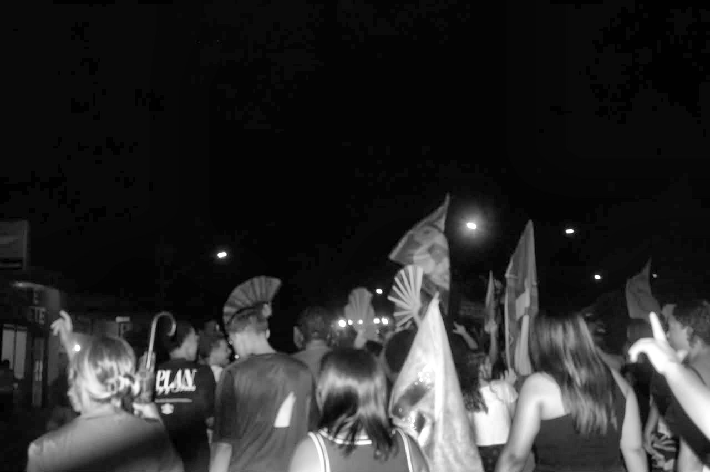

O Impulso
Uniu estudantes e
trabalhadores.
Cresceu nas ruas.
O Impulso Jovem nasceu em outubro de 2026, em Divisa Alegre e Águas Vermelhas, da união de jovens estudantes e trabalhadores das duas cidades.
A gente não se conheceu em gabinete. A gente se uniu defendendo as mesmas pautas — e desde então não parou mais.
Nosso primeiro ato foi a Caminhada pela Democracia. Depois dela não paramos: assumimos a defesa das pautas sociais, acolhemos minorias e todo tipo de gente, e escolhemos um lado — o da juventude, o dos trabalhadores, o de quem é tratado como sobra.
Não temos tempo de estrada pra inventar. Temos uma cidade de cada lado da divisa, uma passeata no currículo e muito o que fazer.

Nossos princípios
- Anticapitalista
- Antiracista
- Contra a LGBTfobia e a misoginia
- Ambientalista
- Antifascista
Como nos organizamos
Núcleos por cidade — Divisa Alegre e Águas Vermelhas — e três frentes de trabalho: formação, mobilização de redes sociais e militância. Cada núcleo se reúne na sua cidade e o que é decidido fica registrado, à vista de todo mundo.
Out 2026
Fundação: união de jovens estudantes e trabalhadores das duas cidades.
Caminhada
Nosso primeiro ato público: a Caminhada pela Democracia.
Hoje
Defesa das pautas sociais, núcleos nas duas cidades e formação política.